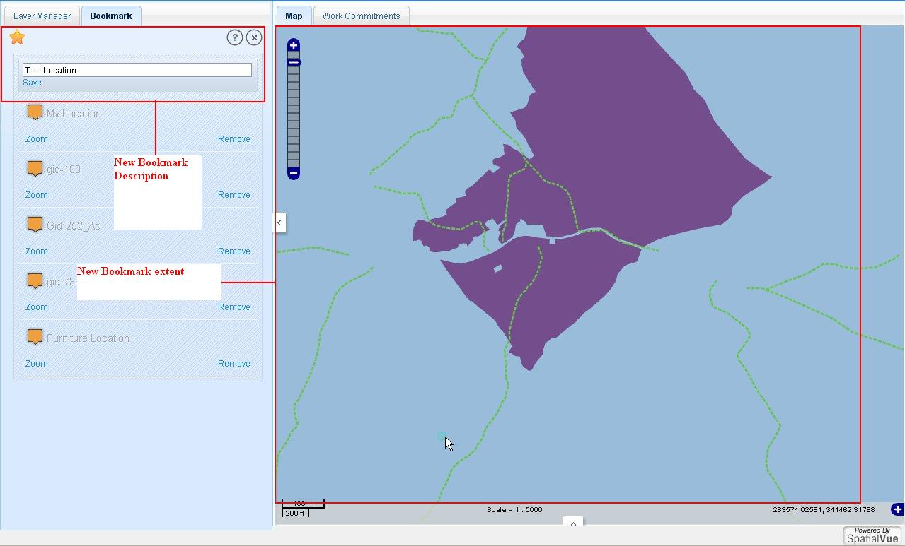

Bookmarks tool allows users to save a particular area of interest of map canvas for future reference.
The following functionalities can be performed on bookmark:
To create a new bookmark, click on bookmark tool.
In bookmark tab click on star shaped button, application shows a text box below the tool with a link ‘Save’.
Now set the map view to the required extent on required zoom level.
Enter the name of the new bookmark on the text box.
Click on the link ‘Save’. Application will save the bookmark to the server and the saved bookmark will be shown in the bookmark list.

To go to a previously saved bookmark, click on link ‘Zoom’ below a saved bookmark. Application changes the map view to the bookmark’s extent.
To remove a saved bookmark, click on Remove link below of that bookmark.
A confirmation message pops-up.
Click ‘Ok’ to remove the bookmark or click ‘Cancel’ to exit from the message without removing the bookmark.